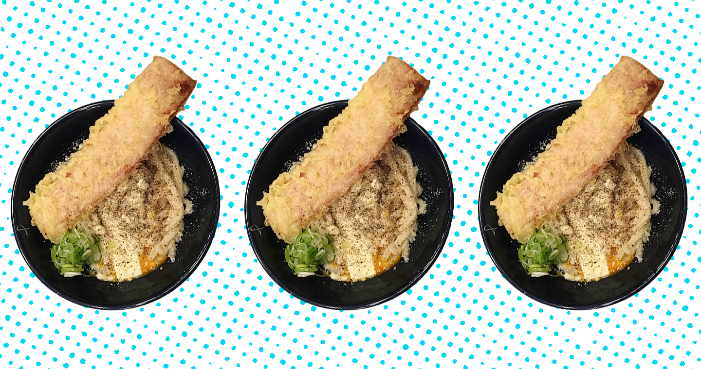
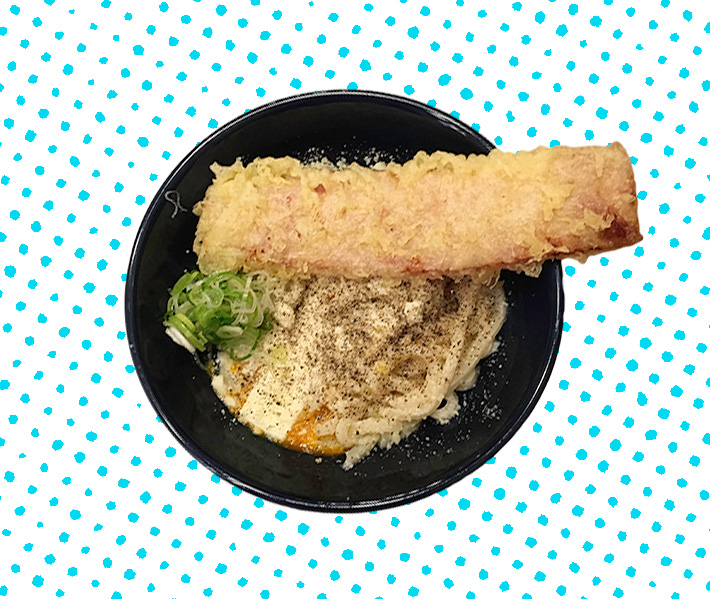

carefully curated opinions about the best (and worst) bars, restaurants, hotels, recipes, art and design across the world
City Guide
Tokyo: Shin (慎) Udon’s Carbonara Udon is the best bowl in Tokyo…

Shin Udon (うどん 慎)
Shinjuku station stop, accessible by many, many train lines. You want to exit out the south and / or west side of the station
11:00 AM to 11:00 PM (till midnight Fri - Sat)
7 days a week
No Reservations
Address in English:
Yoyogi 2-20-16, Shibuya-ku, (TokyoSoma Motor Building 1F)
Address in Japanese:
東京都渋谷区代々木2-20-16 [相馬ビル1F]
(Note about addresses: In general you don't need the building name or floor and that sometimes confuses google maps. However, once you get to the address, the building name is usually displayed prominently in English)
Shin (慎) Udon’s Carbonara Udon is the best bowl in Tokyo…which would put it high in the running for best world wide. Yes, it’s not traditional, but so what, I’m a non-traditional kind of guy. I’m also of Italian descent and I will never say no to carbonara (Editor’s note: It’s true. He once ordered it in the Venice airport… it was actually pretty damn good). Udon Shin (うどん 慎), in Minami-Shinjuku (just southwest of shinjuku station, Exit A9 from Tokyo Metro or South exit from JR lines), is one of the top 100 udon restaurant in Japan and one of the top 5000 of all restaurants. “Ohhh.. big deal. Top 5000…” you mutter sarcastically. Well…actually…. With 700,000 restaurants in Japan and an estimated 150,000 in Tokyo, that means it’s the top 1% of all restaurants in Japan. Not bad when you think about it that way. Because of this fact, Shin Udon is very popular. Much like Fuunji (風雲児 ), the tsukemen (ramen with dipping sauce) shop right around the corner, there is ALWAYS a line. Pro tip (and yes, I am a professional), get there 30 minutes before they open, that way you get in on first seating and don’t have to wait 45 minutes to an hour and a half. No, I’m not joking…yes, an hour and a half, and yes, it’s worth it. (god… you people and your questions. You’d think you’d trust me by now).
While you are waiting on line, one of the servers will hand you a menu and quickly take your order. They have Japanese, and English / Korean menus, both with gorgeous photographs of all the udon available. They have hot udon and cold udon. Both are sublime, especially any with sudachi or yuzu, (different types of Japanese citrus). But, since you followed my advice and showed up at 10:30, it’s basically breakfast time, and you are here for one reason and one reason only, the udon carbonara.
The purpose of ordering in advance is two-fold, yes it speeds up the line but it’s also about freshness. The chef will will drop the noodles, (the ones he mixed, stretched & cut just minutes earlier), as soon as you sit-down, making this possibly the freshest handmade noodles you will ever have.The udon carbonara itself is really a thing of beauty and the perfect example of the centuries old Japanese tradition of interpreting foods from other cultures through a Japanese lens. Featuring the freshest hand cooked noodles. They have that chew to them. (If you consider yourself a New Yorker, you know what I’m talking about) It’s the same chew NYC bagels have and NYC pizza has.Served in a slightly smokey bonito laced broth (dashi), topped with butter, Parmesan, a raw egg, cracked black pepper and a monstrous slice of bacon tempura.
The Udon Carbonara, in essence, is the deconstructed bacon. egg and cheese you didn’t know you needed in this life.

Tasting notes:
(hold on there… rewind.) Bacon Tempura?? Yes, You read that right. Bay.Con.Tem.Pour.Rah! If I had to find any fault at all with the dish, it would be the bacon. (I know! I’m sorry...) the problem is sometimes the Japanese consider bacon the proper cured, sliced, pork belly and sometimes it’s the “Canadian” kind, the boiled smoked pork leg... so... ham. At Shin Udon it is of the ham variety. And it’s massive. Almost too much to pick up with your chopsticks. Some might disagree with the raw egg, (soft boiled is an option) but get it raw. Mix it around and the egg will cook in the hot noodles making the perfect creamy egg sauce, like any true carbonara worth it’s salt. (see what I did there?) *note: it doesn’t actually say “carbonara" on the menu, but “noodles, raw egg, Parmesan cheese, butter, pepper, bacon tempura"
Additional reading:
If it really is THAT hot outside and you just can’t bring yourself to get a hot bowl of soup, These two cold bowls are pretty damn good.
1. If you’re feeling fancy and flush (with cash**) go with the cold Wagyu beef and yuzu (japanese citrus) bowl. $18-ish
2. Something lighter on the wallet and stomach,the “cold bamboo tray” is named as such because the cold soupless noodles sit on a tray of bamboo… there’s no bamboo in the noodles. I recommend the version with daikon (a mild grated radish), Nori (salty seaweed…you know, like those snacks at Trader Joe’s), and sudachi (japanese lime, almost like a key lime but a little peppery and more flavourful). Refreshing and light on a summer’s day $9-ish
** It’s less than $20 for Wagyu beef and some of the best handmade noodles in the world, most would consider that a steal.
These are also worth your time


A global branding , design & consulting agency from NYC, in Tokyo. We're big in Australia.